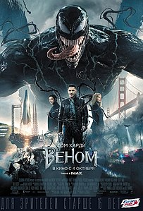
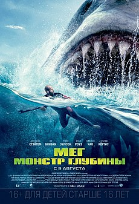

- Веном

Сюжет
Биоинженерная корпорация Life Foundation извлекает космический корабль, который разбился в Малайзии с четырьмя внеземными
симбиотическими формами жизни, хотя один из них ускользает, и переносит их в исследовательский центр в Сан-Франциско. Ее генеральный
директор, Карлтон Дрейк, становится одержимым связыванием симбиотов с людьми, чтобы подготовить человечество к неизбежному экологическому
коллапсу Земли и начинает незаконно экспериментировать с бездомными, что приводит к многочисленным смертельным исходам, включая одного из
оставшихся симбиотов, и привлечению внимания журналиста Эдди Брока, который проводит интервью с Дрейком через свою подругу Энн Вейинг,
адвоката, связанного с Life Foundation. Против инструкций Брок сталкивается с Дрейком с конфиденциальными материалами, которые он украл из
электронной почты Вейинг, что привело к тому, что они оба уволены с работы и заканчивают свои отношения.
Шесть месяцев спустя к Броку подошла один из учёных Дрейка Дора Скирт, которая не согласна с методами Дрейка и хочет помочь
Броку разоблачить его. С ее помощью Брок проникает в исследовательский центр Дрейка, чтобы получить доказательства его преступлений, в
процессе узнавая, что его знакомая, Донна Диего, стало одним из подручных Дрейка. Брок пытается спасти ее, но Донна нападает на него и
заражает его симбиотом перед смертью. Броку удается убежать, но вскоре начинают проявляться странные симптомы и обращается к Вейинг за
помощью. Ее новый друг, доктор Эмерсон Коллинз, изучает Брока и узнает, что симбиот внутри него уязвим для шумов. Тем временем Дрейк наказывает
Скирт за ее предательство, подвергая ее одному из оставшихся симбиотов, оставляя симбиота Брока в качестве единственного выжившего экземпляра.
Брок атакован наемниками, нанятыми Дрейком для извлечения симбиота, и превращается в чудовищное существо, известное как «Веном»,
чтобы отразить их и сбежать в соседний маяк. Симбиот общается с Броком и убеждает его сформировать альянс, чтобы он мог испытать жизнь через
, в то время как Брок получает удовольствие от сверхчеловеческих сил, которые дает ему симбиот. Брок использует свои новообретенные способности,
чтобы проникнуть на свое прежнее рабочее место, чтобы стать свидетелем преступлений Дрейка, но на пути встречает наемников и снова переходит в
Венома, чтобы убежать. Вейинг зовет его обратно в офис Эмерсона, где Брок узнает, что симбиот медленно разлагает его внутренние органы. Хотя
симбиот утверждает, что он является частью их симбиоза, Брок использует МРТ, чтобы ослабить симбиота достаточно надолго, чтобы отделиться от него,
но затем он захватывается людьми Дрейка.
В штаб-квартире Life Foundation Брок узнает, что Дрейк слился с беглым симбиотом и что они планируют запустить зонд в космос и
вернуть легион симбиотов на Землю, чтобы ассимилировать человечество. Тем временем Вейинг неохотно общается с симбиотом, превращаясь в женскую
версию Венома и врываясь в Life Foundation, чтобы спасти Брока, передав ему симбиота с поцелуем. Брок и симбиот снова становятся Веномом и
намереваются остановить Дрейка и его симбиота, которые превращаются в «Райота». Веном и Райот дерутся на платформе запуска зонда, прежде чем
Веном сумеет повредить зонд, в результате чего он взрывается, нарушив план Дрейка. Райот поглощается огнем, в то время как Веном выживает. Вскоре
после этого Брок поправил свои отношения с Вейинг и вернулся к журналистике, в то же время тайно работая вместе с симбиотом, чтобы защитить город
как Веном.
- Мег:Монтр глубины

Сюжет
Джонас Тейлор, спасатель-дайвер, пытается спасти группу ученых, оказавшихся внутри атомной подводной лодки. Когда Тейлор и Джордан
Мартин-Маккей спасают последнего оставшегося в живых, он видит, что корпус подводной лодки протаранило неизвестное существо. Когда он возвращается
на спасательное судно, в поврежденной подводной лодке застревают два ученых. Тейлор решает уйти, понимая, что завершение спасения приведет к
гибели каждого. Лодка взрывается. Рассказ Тейлора о том, что гигантское морское существо вызвало катастрофу, был отклонен доктором Хеллером,
полагающим, что Тейлор страдает от психоза, вызванного давлением.
Спустя пять лет миллиардер Джек Моррис встречает доктора Минвей Чжана на подводном исследовательском объекте «Мана-Один», который
финансирует Моррис. Чжан и его дочь, океанограф Сюин, возглавляют миссию по изучению более глубокой части Марианской впадины, скрытой облаком
термоклина сероводорода. Туда на глубоководном батискафе спускаются трое исследователей - Лори (бывшая жена Тейлора), Тоши и Уолл. Поначалу миссия
идет хорошо но, затем батискаф атакует неизвестное существо, в результате чего они теряют контакт с Мана-Один.
Джеймс «Мак» Макрейдес, другой член экипажа на станции, предлагает отправить Тейлора, чтобы попытаться спасти их, сославшись на сходство
с его историей. Несмотря на возражения Хеллера, Чжан и Мак решили отправиться в Таиланд, чтобы нанять Тейлора. Сюин тем временем спускается во впадину
чтобы попытатся самой спасти экипаж батискафа но подвергается нападению гигантского кальмара. Затем появляется гигантская акула и убивает его.
Согласившись помочь, Тейлор достигает захваченного аппарата и спасает Лори и Уолла. Однако, когда гигантская акула возвращается, Тоши жертвует собой,
закрыв дверь люка и отсоединив спасательный корабль, позволяя Тейлору, Лори и Уоллу бежать безопасно, в то время как он отвлекает внимание акулы, после
чего она уничтожает батискаф.
На Мана-Один команда обнаруживает, что акула убившая Тоши это Мегалодон, самая большая акула, когда-либо известная, которая как считалось,
вымерла много миллионов лет назад. Между тем дочь Сюин спускается на нижний уровень станции и подходит к большому стеклу с видом на океан, и видит Мегалодона
сквозь стекло. Когда Сюин вместе с Джонасом находят дочь они видят как Мегалодон съедает кита. Затем экипаж осознает, что он сбежал из глубины впадины,
проплыв через отверстие в термоклине, созданное взрывом теплового вентиля, ненадолго подняв температуру, достаточную для безопасного перехода. Группа узнает
что Мегалодон потопил несколько кораблей и решает отследить и отравить его. Джонасу удается подплыть к акуле и прицепить на неё маячок, затем Сюин в специальной
клетке спускается под воду и стреляет в Мегалодона дротиком со смертельной дозой морфина но при этом кислородная маска Сюин повреждается, но Тейлору удается
спасти её. Несмотря на первоначальный успех, Тейлор комментирует, что зубы этой акулы по размеру не совпадают с предыдущей атакой. Вскоре после этого из воды
появляется колоссальный Мегалодон и убивает Уолла, Хеллера и д-ра Чжана, опрокидывает лодку и пожирает меньшего Мегалодона. Выжившая команда возвращается к Мана-Один
в двух лодках. Моррис сообщает, что он сообщил местным органам власти и военно-морским силам, но это не в их силах.
С наступлением темноты Моррис пытается уничтожить Мегалодона, приказав экипажу вертолета сбросить на него модифицированные глубинные заряды, сославшись
на то, что действия существа могут привести к судебным искам. Он подходит к каркасу предполагаемого Мегалодона в лодке, но обнаруживает, что это кит. Когда Мегалодон
приближается, лодка ускоряется, Моррис падает за борт и его съедает Мегалодон. Тейлор и оставшаяся команда Мана-Один обнаружив что Моррис обманул их, отслеживают акулу
и понимают, что она находится на пути к переполненному пляжу в заливе Санья.
Мегалодон убивает нескольких отдыхающих, прежде чем экипаж «Мана-1» воспроизводит звук вызова кита, чтобы отвлечь внимание акулы к ним. Тейлор и Сюин
пытаются уничтожить Мегалодона с помощью навесных торпед, но безрезультатно, и в процессе батискаф Тейлора получает сильные повреждения. Тейлору удается нанести
Мегалодону удар в глаз гарпуном. Из-за присутствия крови многочисленные акулы в области замечают кровь и пожирают Мегалодона, убивая его. Во время боя Сюин смогла
эвакуировать всех на лодку, где китайская пара отмечает свою свадьбу. Тейлор садится на лодку, и он и Сюин считают, что нужно провести отпуск.